埼玉県鴻巣市・樹脂／金属塗装
塗装で、
意匠をつくる。
東成工業は、プラスチック（樹脂）部品をメインとした塗装メーカーです。品質レベルの高いとされる自動車部品塗装に40年携わり、ピアノブラックや高輝度調シルバーといった、技術を要する意匠を手がけてきました。
小ロット数個から日産数千個まで。1cm四方の小物から2mの長尺物まで。埼玉を中心に、東京・神奈川・群馬・栃木へアクセスしやすい立地です。
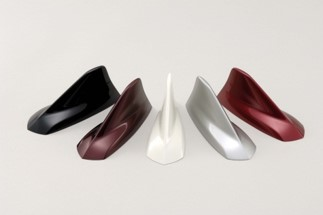
- 40年自動車部品塗装の実績
- 5mm 〜 2m塗装できる部品サイズ
- 数個 〜 数千個1日あたりのロット
- 2工場鴻巣・行田
塗れる意匠
塗装は、
多彩な意匠を表現します。
色を塗る、というより、質感をつくる仕事です。同じ塗料でも設備が違えば仕上がりが変わるため、求める意匠に合わせて塗装方法から選びます。
-
ピアノブラック
深い光沢のある黒。同じ塗料を使っても設備により意匠が変わるため、塗装方法を精査し、塗料メーカーの協力を得ながら試作を進めます。
-
高輝度調シルバー
輝度の強いキラキラとしたシルバー。上にクリア塗装を施してツヤを出すことで、さらに高級感を演出できます。
-
UV塗装
紫外線硬化型塗料による塗装。通常のウレタン塗料に比べて硬度を持たせられ、意匠としてはツヤ感を表せます。
-
塗分塗装
二つの部品を組み合わせたような意匠に見せるため、部分的に塗装色を変えて塗り分けます。
-
特殊塗装
ゴムのような触感（ソフト調）や、艶消しの意匠も塗装で表現できます。
-
金メッキ調塗装
メッキ面の上に黄色や青色などの透明色を塗ることで、メッキの輝度を保ちながら色彩をつけられます。
製品案内
車の中と外、
それ以外も。
主に自動車部品を手がけていますが、バイク、鉄道、アミューズメント、スポーツ用品、産業機器のカバーまで、塗る対象は限りません。
自動車 内装部品
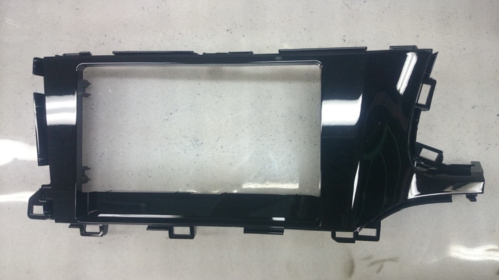
パネルセンターピアノブラック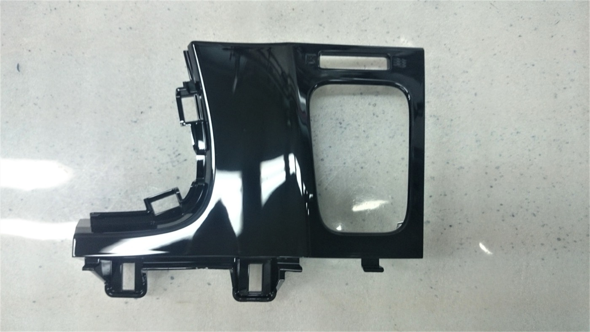
パネルドライバーピアノブラック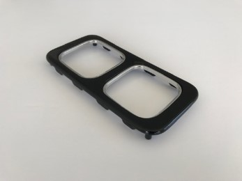
カップホルダーピアノブラック＋メッキ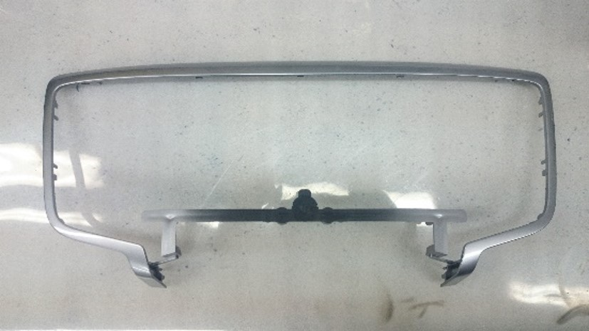
メーターガーニッシュ高輝度調シルバー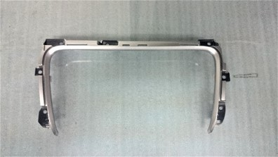
コンソールガーニッシュメタリック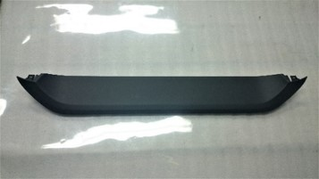
メーターバイザー艶消しブラック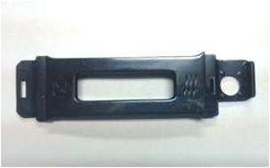
エアコンスイッチUV塗装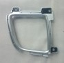
エアコン吹出口メタリック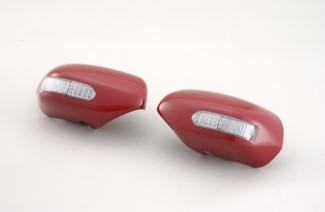
ドアインケースソフト調塗装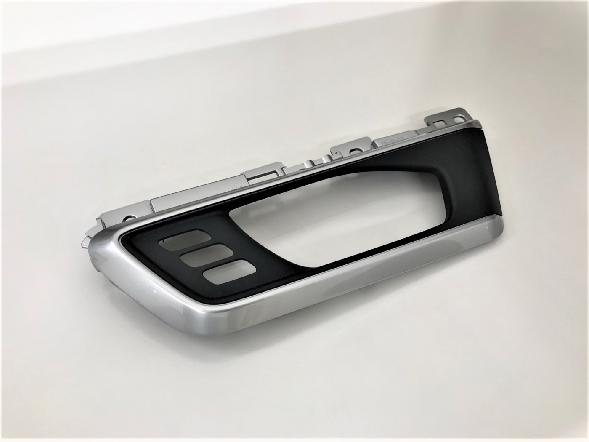
スイッチパネルシルバー／ブラック 塗分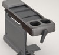
カップホルダー— スイッチパネル—
スイッチパネル—
自動車 外装部品
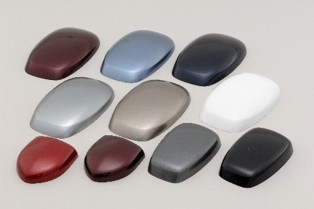
ルーフアンテナカバーボディ同色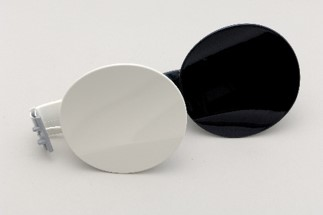
フューエルリッドボディ同色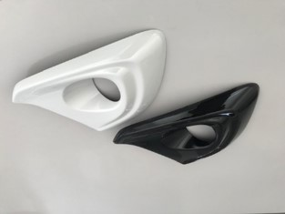
フォグガーニッシュボディ同色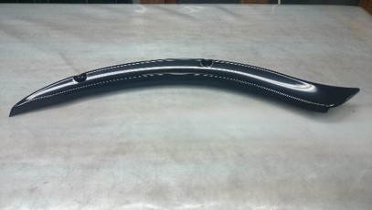
サイドガーニッシュ長尺物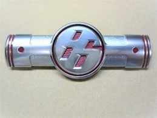
エンブレム凹部塗装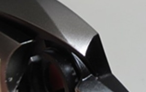
外装部品—
その他の塗装部品
- バイク サイドガーニッシュ
- 新幹線 スピーカー受け
- アミューズメント部品
- スポーツ部品
- 産業機器カバー
塗装方法
三つの塗り方を、
形と数で選びます。
複雑な形は人の手で、平らで数の出るものはオートメーションで、大きなものはロボットで。どれが向くかは、形状とロットで決まります。
人の手による塗装
- 数量（1日）
- 試作 〜 大ロット 500個
- サイズ
- 5mm 〜 1200mm
試作から量産、小さいサイズから長モノまで対応可能です。複雑な形状や特殊塗装まで、塗装マンの手により塗装を施します。塗装品の形状に対し、柔軟に対応することができます。
オートメーション塗装
- 数量（1日）
- 大ロット 300 〜 1500個
- サイズ
- 〜 500mm × 500mm
量産を得意とします。比較的平滑な部品形状に適しています。最適な塗装条件を設定することにより、塗装品質が安定します。当社塗装マンが塗装状態を管理するため、大ロットでもご安心いただけます。
ロボット塗装
- 数量（1日）
- 大ロット 100 〜 800個
- サイズ
- 〜 1200mm × 500mm
量産を得意とします。比較的大きな成形品を得意とします。塗装技術者によりティーチングを行いますので、塗装品質も安心です。
協力会社との連携でできること
- 成型
協力会社との連携により、スムーズな成形品の自給が可能です。
- メッキ処理
成形品にメッキを施せます。メッキの上層部に塗装を施せるため、金メッキなどのカラーメッキ調にも表現できます。
- ロゴ入れ
塗装の上にロゴを入れられます（パッド印刷・シルク印刷等）。
特長
高品質と、柔軟さ。
高品質な製品供給が可能
- 塗装でも品質レベルの高いとされる自動車部品塗装に携わり、40年の実績に基づくノウハウと技術を持つ
- 最高品質とされる等級の塗装品を常時納品
- ご要望に沿うべく、工程管理・品質管理を徹底
- 塗装技術を要するといわれる、ピアノブラック色、高輝度意匠も塗装可能
- 塗料メーカー・塗料代理店と良好な関係で、ほとんどの塗料を一次代理店から入手するため、塗料が安定的かつ適正な価格で入手可能
柔軟な塗装
- 小ロット（数個／日）〜 大量ロット（数千個／日）の塗装が可能
- 1cm四方の小型部品 〜 2mほどの長モノまで塗装が可能
- プラスチック材料・成型法のノウハウを持つため、成形品の開発段階から金型仕様・成形条件設定も含めて提案可能
- 鉄（SS）、ステンレス（SUS）などの金属素材も、物性を重んじた前処理・塗料・塗装方法のご提案が可能
- お客様のご要望に対し、表面処理に関する共同開発も可能
品質・認証
第三者に、
見てもらっています。
- ISO 9001認証取得（平成17年3月）
- 彩の国工場埼玉県指定（平成24年9月）
- 経営革新計画埼玉県制度 承認（平成24年3月）
品質方針
高品位な塗装技術でより良い製品を提供し、お客様の信頼を勝ち取る。
- 高品位塗装の技術向上に更に取り組み進化し続けます。
- 搬入品質不良ゼロを達成し、5S活動を継続的に実施します。
- 顧客要求事項を含めて法令・規格要求事項を順守します。
- 目標を確実に達成し成果をあげ、事業に役立つ品質マネジメントシステムとするために継続的改善に努めます。
- この方針は文書化し、当社の全社員に周知徹底すると共に、社外とのコミュニケーションのために開示します。
社是・経営理念
仁義礼智信
- すべてのステークホルダーに信用、信頼される企業になります
- 存続価値を追求し、笑顔あふれる企業になります
- 永続性のある企業になり、地域社会に貢献します
沿革
金属から樹脂へ、
上尾から鴻巣・行田へ。
- 昭和53年10月
埼玉県上尾市にて金属部品塗装業を開始。適時、ライン増設。
- 昭和55年6月
樹脂塗装を開始。随時、金属塗装より樹脂塗装へ切り替え。
- 平成11年1月
埼玉県鴻巣市に工場用地を取得。工場および塗装設備の工事開始。
- 平成12年4月
鴻巣工場完成、操業開始。主力設備（OHC1）稼働開始。
- 平成12年5月
固定式塗装ライン稼働開始。
- 平成13年11月
上尾工場から鴻巣工場へ全面移転。上尾工場、稼働終了。
- 平成14年3月
新社屋および新工場を建設（鴻巣工場内）。
- 平成14年8月
新ライン（SlatC）稼働開始。
- 平成15年9月
新ライン（OHC2）稼働開始。
- 平成17年3月
ISO 9001：2000 認証取得。
- 平成17年4月
埼玉県行田市に工場用地を取得。工場および塗装設備の工事開始。
- 平成17年9月
行田工場完成、操業開始。
- 平成19年6月
行田工場、オートメーション塗装ライン（S1）稼働開始。
- 平成23年7月
行田工場、オートメーション塗装ライン（S2）増設、稼働開始。
- 平成24年3月
埼玉県制度「経営革新」申請承認。
- 平成24年9月
埼玉県「彩の国工場」指定。
よくあるご質問
はじめての方へ
どのくらいの大きさまで塗装できますか。
1cm四方の小型部品から2mほどの長尺物まで対応します。人の手による塗装は5mm〜1200mm、ロボット塗装は1200mm×500mmまで、オートメーション塗装は500mm×500mmまでが目安です。
少ない数量でもお願いできますか。
小ロット（数個／日）から大量ロット（数千個／日）まで対応します。人の手による塗装なら試作から500個程度まで、複雑な形状や特殊塗装にも柔軟に対応できます。
ピアノブラックはお願いできますか。
対応しています。ピアノブラックは同じ塗料でも設備により意匠が変わるため、塗装方法を精査し、塗料メーカーの協力を得ながら試作を進めます。高輝度調シルバーも同様です。
金属部品も塗装できますか。
できます。鉄（SS）やステンレス（SUS）など、物性を重んじた前処理・塗料・塗装方法をご提案します。創業時は金属部品の塗装業から始まった会社です。
成形やメッキもまとめて頼めますか。
協力会社との連携により、成形品の自給、メッキ処理、塗装上へのロゴ入れ（パッド印刷・シルク印刷）まで対応できます。メッキの上層に塗装を施すことで、金メッキ調などのカラーメッキ表現も可能です。
開発段階から相談できますか。
プラスチック材料・成型法のノウハウを持つため、成形品の開発段階から金型仕様・成形条件の設定を含めてご提案できます。表面処理に関する共同開発も承ります。
会社概要
東成工業株式会社
- 会社名
- 東成工業株式会社（TOHSEI Industries Co., Ltd.）
- 創立
- 昭和55年9月（創業 昭和53年10月）
- 資本金
- 5,000万円
- 決算期
- 年1回 3月
- 代表者
- 取締役 安藤 信崇
- 役員
- 取締役 湯浅 正通
取締役 梅澤 礼子
相談役 安藤 一 - 事業内容
- 部品塗装（樹脂・金属）をはじめとした表面処理加工
- 取引銀行
- 埼玉りそな銀行 上尾支店／群馬銀行 鴻巣支店
埼玉縣信用金庫 鴻巣支店／株式会社日本政策金融公庫 - 所属団体
- 公益財団法人 埼玉県産業振興公社／上尾商工会議所／鴻巣商工会
拠点
本社・本社工場
埼玉県鴻巣市箕田1727-1
048-595-1388（代）
Fax. 048-597-2611
行田工場
埼玉県行田市大字野3666-10
048-559-3570（代）
Fax. 048-559-3570
まず、部品をお見せください。
形状と数量、求める意匠が分かれば、どの塗り方が向くかをお答えします。開発段階からのご相談も歓迎します。